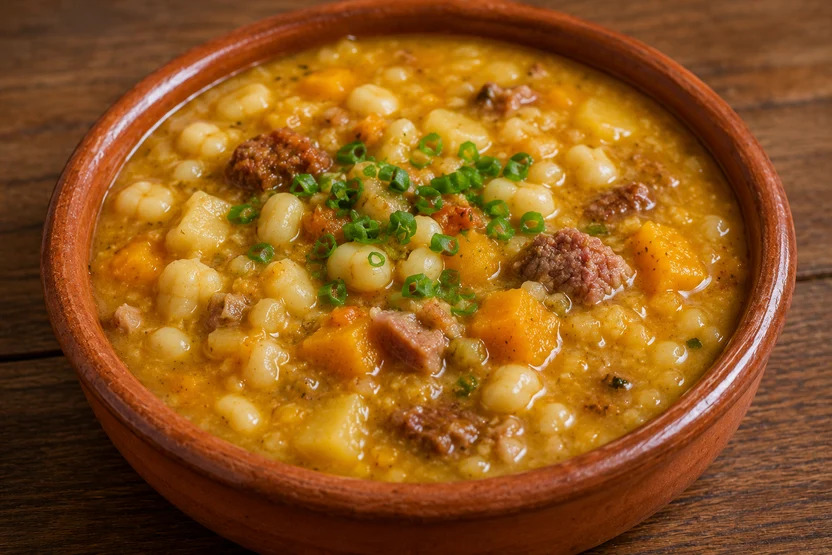

Home
Locro Recipe

Description
Locro has pre-Columbian origins. The Andean peoples of what is now northern Argentina, Bolivia, and Peru were cooking versions of this corn-and-bean stew for over a thousand years before the Spanish arrived. After European colonisation, beef, pork, and chorizo were added. The result is the dish Argentinians consider their national meal.
It is cooked on May 25th (May Revolution) and July 9th (Independence Day), traditionally served to large groups of family and friends in a communal pot. Good locro is slow cooked. At least three hours, ideally four. The corn breaks down, the beans soften, the broth thickens, the fat renders, everything marries.
This recipe serves 8 to 10. Halving it does not really work (the flavours do not develop properly in a small pot). Make the full batch, invite friends over, or freeze portions for later.
Ingredients
For the locro (soak overnight)
- 500 g dried white corn (maíz blanco, soaked overnight)
- 250 g dried white beans (soaked overnight)
- 500 g beef osso buco or gravy beef, cubed
- 300 g pork belly, diced
- 200 g pork chorizo (fresh or cured)
- 300 g pumpkin, peeled and cubed
- 2 large onions, finely diced
- 3 cloves garlic, minced
- 2 bay leaves
- 1 tbsp sweet paprika
- 1 tsp ground cumin
- 3 L chicken or beef stock
- 3 tbsp olive oil
- Salt to taste
For the quiqui (spicy topping)
- 4 green onions, finely sliced
- 1 red chilli, finely chopped
- 1 tsp sweet paprika
- 1 tsp dried chilli flakes
- 120 ml olive oil
Steps
- Overnight soak: The night before, rinse the dried white corn and beans. Place in separate large bowls and cover with plenty of cold water. Leave overnight.
- Start the stew: The next day, drain the corn and beans. In a large heavy pot (at least 6 L), heat the olive oil over medium heat. Add the diced onions and cook for 10 minutes until soft.
- Brown the meats: Add the beef, pork belly, and chorizo to the pot. Brown for 10 minutes, stirring regularly. Add the garlic, bay leaves, paprika, and cumin. Stir for 1 minute.
- Add the corn, beans, and stock: Add the drained corn and beans to the pot. Pour in the stock. Bring to a boil, then reduce to a low simmer. Cover partially.
- Long cook: Cook at a low simmer for 2 hours, stirring occasionally and scraping the bottom so nothing sticks. Check water level, top up if needed, but remember the end result should be thick.
- Add the pumpkin: Add the cubed pumpkin after 2 hours. Cook for another 45 minutes to 1 hour, until the corn has broken down, the beans are tender, and the pumpkin has dissolved into the broth to thicken it.
- Make the quiqui: While the locro finishes, heat the olive oil in a small pan. Add paprika and chilli flakes, warm gently for 30 seconds (do not burn). Remove from heat, add green onions and fresh chilli. Season with salt.
- Serve: Serve the locro in deep bowls. Top with a spoonful of quiqui. The quiqui is added to taste at the table.